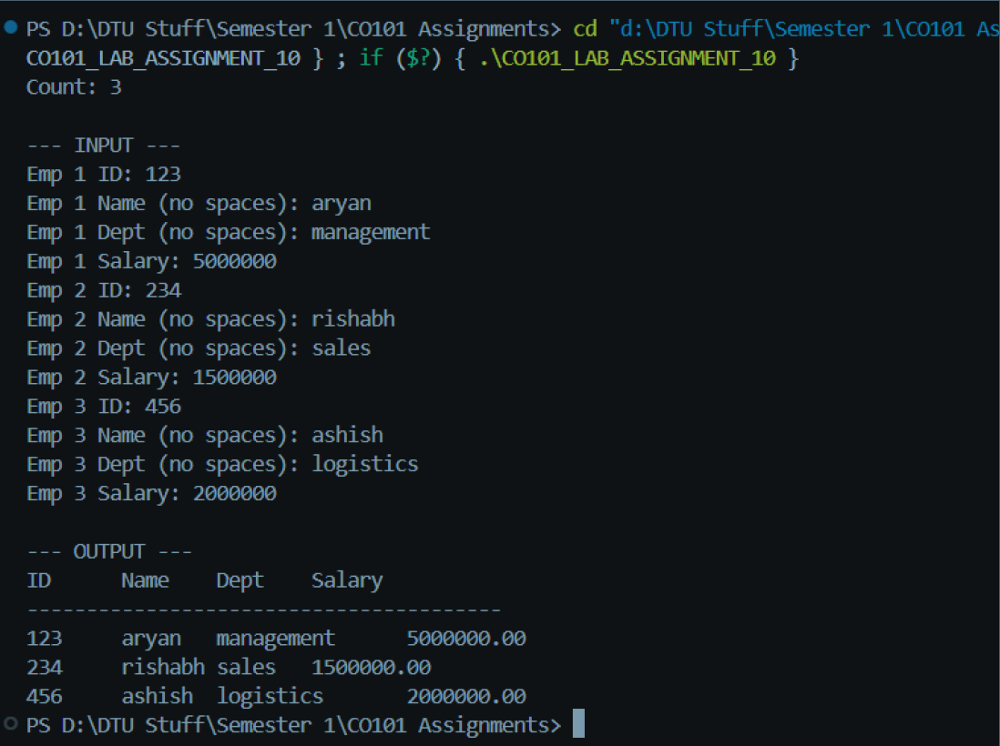
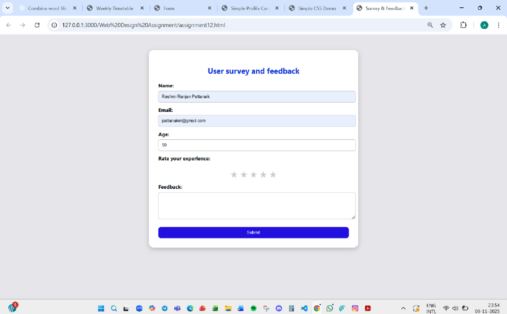

Hello! I am Aditya and this is my simple portfolio website I built with basic HTML and CSS.
I am a first year student at DTU from CSE branch. I am a dedicated student with a strong passion for web design, programming, and technology. I have a real passion for creating clean, simple, and easy-to-use websites while I continue to develop my abilities. With a mindset of curiosity and growth, I attempt to expand my knowledge, tactics, and tools that assist me in being able to develop better each day. Apart from these I have interest in sports and arts.
Basic C programming Project File. This Programming Fundamentals project file contains 50 experiments designed to build a strong foundation in the C programming language. The file includes work ranging from introductory concepts, such as understanding the C compiler and printing basic output, to more advanced programming tasks including string manipulation, functions, matrices, arrays, sorting techniques, and structured data handling. Here is one of them for reference:
Web Designing Project File using HTML and CSS.This Web Designing Practical File is a comprehensive collection of laboratory exercises designed to build a strong foundation in HTML and CSS. It includes multiple hands-on tasks that demonstrate essential concepts such as HTML document structure, text formatting, hyperlinks, semantic tags, meta tags, image handling, lists, tables, forms, and CSS styling. Here is one of them for reference:
